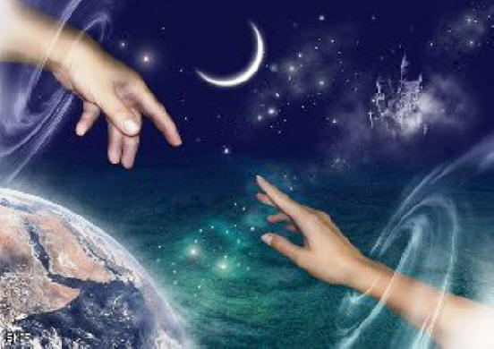
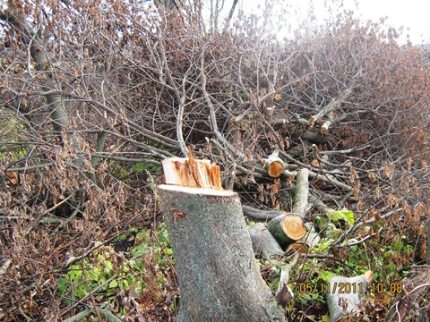
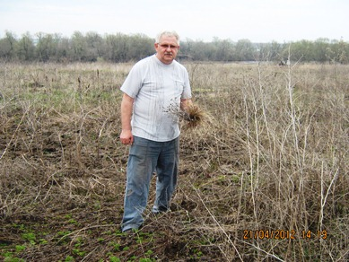
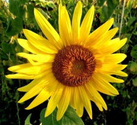
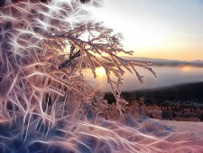
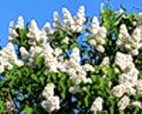

Смоляков
Алексей Алексеевич
Оставайся где-то рядом
Прикоснись случайным взглядом,
Отогрей своей улыбкой.
Оставайся где-то рядом,
Пусть мечтой туманно-зыбкой.
Оставайся где-то рядом,
Пусть землёй, дождём умытой.
Не открытым ещё кладом,
Может песней позабытой,
Что звучит тревожа душу,
Сердцу не даёт покоя.
В полудрёме её слышу,
Возвращаясь в прожитое.
Оставайся где-то рядом,
Этим вновь зелёным полем.
Может быть цветущим садом,
Или просто, тихим горем,
Что с тобою ходит тенью.
Ничего уже не просит,
И по первому веленью
Твои тапочки приносит.
Оставайся где-то рядом,
Пусть чарующим рассветом.
Может пламенным закатом.
Или просто лунным светом,
Что ложится на дороги,
Серебром их посыпая,
Где ступают мои ноги,
Когда здесь иду мечтая.
Оставайся где-то рядом,
Может быть рекой спокойной.
Пусть бурлящим водопадом,
Или той берёзкой стройной,
Что обнять всегда смогу я.
Тёплою щекой прижаться,
И она, меня целуя,
Не захочет расставаться.
Со мной рядом оставайся,
Той звездой на тёмном небе.
И простившись- не прощайся,
Прорасти в зелёный стебель,
Обернись листвою липкой,
Что весною расцветает.
Успокой своей улыбкой,
Пусть улыбка всех прощает.
25.02.2013г
Уходи
Я тебя уже больше не жду.
Разошлись давно наши пути.
Вместе быть, только множить беду.
Уходи.
Пусть прощание будет без слёз.
Пыл горячей души остуди.
Не отвечу на главный вопрос.
Уходи.
Те слова, что тобою сказаны,
Заморозили сердце в груди.
Узелки, что связали, развязаны.
Уходи.
Не итож за меня то, что прожито.
Не гадай то, что ждёт впереди.
То, что было, в архивы уложено.
Уходи.
16.02.2012г
Я звезду твою в небе найду
Отлюбилось, остыло, отмаялось,
Вянут чувства как листья в саду.
Замерзает в душе то, что плавилось..
Я звезду твою в небе найду.
Лишь она, как и прежде, мне бережно
Будет цветом жемчужным светить,
И подскажет тебе, чтобы верилось,
Что и я мог когда-то любить.
А в саду расползается марево
Из тумана и призрачных грёз.
От пожара осталось лишь зарево,
А огонь я звезде той отнёс.
Чтоб светила она мне рубинами,
По душе мне рубиновый цвет,
Когда буду лежать под осинами,
Успокоясь под тяжестью лет.
23.01.2013г
В этой пропасти, на дне
(РОМАНС)
Потерял от веры ключик,
Волю утопил в вине.
Не блеснёт и солнца лучик
В этой пропасти, на дне.
Я тебе уже не верю,
Ты уже не божество.
Разолью свою потерю
По бокалам, как вино.
Как сияли наши лица,
Как мы верили мечте.
А она теперь томится
В этой пропасти, на дне.
Может быть тебе забава,
Для меня печаль- тоска.
Как найти душе управу,
Зачеркнуть всё в два мазка.
Как же мне теперь проснуться
И забыть об этом сне.
Как мне к солнышку вернуться
С этой пропасти, на дне.
22.12.2012г
Старая вишня
Старая вишня в остывшем саду
Горестно ветви пригнула
И на промозглом, осеннем ветру,
Вспомнив былое, взгрустнула.
Как пробивалась она из ростка
В травах цветистого луга,
И бережливо рука мужика
Ствол опоясала туго.
Как подрастала, потом зацвела,
К солнцу тянула ладошки,
И бережливо рука мужика
Плод сберегала от мошки.
Как жарким летом, в полуденный зной,
Очень хотелось напиться,
И бережливо рука мужика
Корням давала водицы.
Как в лютозимье, в трескучий мороз,
Замертво падала птица,
И бережливо рука мужика
Всем помогала укрыться.
Значит не надо грустить о былом.
Я перед ним в ответе,
И бережливо рука мужика
Ствол обнимает в привете.
Я влюблена, и он влюблён
И ничего мне не надо,
Только родная рука мужика
Будет со мною рядом.
А та рука занеслась высоко
Резкий удар под дых
Ствол пошатнулся, на землю упал
И удивлённый затих.
И по коре покатилась слеза
Каплей дрожащею, липкой
Глянь мне любимый в мои глаза
Я умираю с улыбкой.
18.10.2011г
Поброжу по косогорам
Поброжу по косогорам где вчера мела пурга,
Где лежали белой шапкой двухметровые снега.
Обнажили косогоры прошлогоднюю траву,
Мне цветов сейчас не надо, я букет травы нарву
И составлю икебану с умирающей травы,
Залечить больную рану, где желания мертвы.
Всё что было зимой стужной умирает по- весне.
От любви шальной, натужной разорвало сердце мне.
И застыло сердце, плачет, а вокруг шумит весна.
Ну так что же это значит, всё пожухло как трава?
Обнажили косогоры прошлогоднюю траву,
Мне цветов уже не надо, я травы букет нарву.
19.04.2012г.
Мы сами выбираем в жизни путь
Мы сами выбираем в жизни путь,
Теряем нужное, ненужное находим.
Потом у бога просим всё вернуть.
И ходим всё по кругу – хороводим.
Судьбу ругаем, пошлый быт кляня.
Что помешал мечтам осуществиться.
Всё ищем, ищем в небе журавля,
Когда в руках замёрзшая синица.
Душа кричит: - Синицу отогреть
Сейчас важней заоблачных мечтаний.
Синица может просто умереть,
Любовь ведь соткана из очень нежных тканей.
И попадёшь опять ты в хоровод,
Чтобы ходить по замкнутому кругу.
Финал никто не знает наперёд,
Не научились доверять друг другу.
27.04.2012г.
Ещё
день...
О любви мне что-то не пишется,
Раскапризничалась душа.
По утрам лишь твой голос слышится:
-Оглянись, отзовись, Лёшааа-
И твой образ проходит тенью,
По ночным занавескам скользя,
Может явь? Скорей сновидение:
- Оглянись, отзовись, так нельзя-
По ногам ветерка дуновение,
Покрывалом слегка шурша,
Может явь? Скорей сновидение:
-Оглянись, отзовись, Лёшааа-
О любви мне что-то не пишется,
Раскапризничалась душа.
Что-то видится, что-то слышится…
Ещё день отошёл, не спеша.
Одиночество
Темнота. Занудный ветер.
Торопливые шаги.
Что ж тебя никто не встретил?
Ни друзья. И ни враги.
Скрип дверей. Щелчок засова
Жёлтый, грязный, тусклый свет.
Ты одна сегодня снова.
Никого на свете нет.
Жидкий чай и чёрствый пряник.
Блики памяти в окне.
Одинокий, поздний странник
Забреди хоть ты ко мне.
Одеяло и подушка, гробовая тишина.
Так скажи же мне на ушко
Что тебе я так нужна.
Как любила, как страдала.
Сколько слёз я пролила.
Неужели тебе мало.
Я одна, одна, одна…
. 05.06.2012г
Говорят, что
есть формула счастья
Говорят, что есть
формула счастья,
С ней сбываются наши мечты.
Только вот незадача, напастье.
Не записана в формуле ты.
Рассчитал кто мне формулу эту,
Записав уравненьем в судьбу.
Не найду в уравненьи ответа,
Осуди, но прости…не найду.
21.08.2012г.
Незаконченное
Сиротливы тёмны ночи
Сиротливы без любви
Тяжелеют свинцом очи
За стеной соседи ропщат
Ты опять один в ночи.
Мозг кипит,картины крутит
Как прожил ты без любви?
Может это мне по сути
Спать мешают фонари.
Надо встать,задёрнуть шторы
И заснуть себе в тепле.
И закончить с собой споры
Жил зачем ты на Земле?
Пересуды,разговоры
Точат душу изнутри.
Просто как-задёрнуть шторы
И огнём бы всё гори.
К горлу ком и ……(читай сначала)
31.08.2011г
Мой подсолнух
Качает ветер вершины сосен
И кружит листьев карусель.
А это значит, что снова осень,
А это значит- короче день.
Короче день- длиннее ночи,
Длиннее ночь- приятней сны,
И снится снова мне город Сочи
И колыхание волны.
И ты со мною, мой подсолнух,
Моё дыхание весны.
И мы с тобой на этих волнах,
Довольны всем и влюблены.
Мы влюблены слепой любовью,
Что называют «бес в ребро».
Мой рыжий бес, совместно с кровью
Тобою сердце заражено.
Заражено любовью нежной,
Любовью странною, до слёз.
Из жизни прежней, безмятежной
Нас кто-то вынул и унёс.
Унёс вдвоём в пучину страсти,
В пучину страсти и любви.
И опьянённые от счастья,
Мы молимся на эти дни.
На эти дни- как озаренье,
Что в этом мире есть любовь.
И неземное наслажденье,
И расставанья злая боль.
На эти дни- как вспышки молний
Над ошалелой головой.
Прощай, мой рыженький подсолнух.
Спасибо. что была со мной.
05.10.2011г
Оставайся в моих грёзах...
Мне бы быть с тобою рядом,
Нам бы быть с тобою вместе.
Мне встречаться с тобой взглядом.
Ты не женщина, ты песня.
Мне однажды предложила
В этой песне быть припевом.
Мол, того я заслужила
Своим телом, а ты- делом.
Для меня ты, мол, подходишь
Рядом быть на светских встречах:
-Или ты так не находишь?
-Буду ждать ответа в вечер.
Я припевом не умею
Потому что- композитор.
Можешь быть моей лишь песней
Душой, сердцем пережитой.
Сотканной из слов чудесных,
Установленной в пюпитр,
В обрамленьи нот небесных
Написал что композитор.
Это ли тебе ни счастье
Быть женой всегда любимой
И в невзгоды и в ненастье
От душевных ран хранимой.
Или просто оставайся
Песней не моей, не спетой.
На заклание отдайся,
Кто с душой переодетой
Жить умеет в этом мире,
Подставляя тело в дело,
Как мишень под пули в тире.
У меня же наболело.
Не хочу быть фаталистом,
Но не ту ты песню пела.
Буду без тебя солистом,
Не шутом из акапеллы.
Оставайся в моих грёзах
Хоть не спетой, но любимой.
Отольётся лучше в слёзах
Боль души моей ранимой.
26.12.2011г
Четыре ночи
Четыре ночи ты мне подарила,
Четыре ночи мне дарованы судьбой.
Четыре ночи счастье говорило,
Четыре ночи правила любовь.
И волны памяти взрывали сущность будней,
Условности запретов и табу.
Кто не любил- запретное осудит,
А кто любил- любовью назовут.
20.05.2012г
В середине января
Снег блестит при лунном свете,
Занимается заря.
Что-то взгляд твой нынче светел,
В середине января.
За
окном кружат снежинки,
Красотою покоря.
А в глазах горят искринки
Переливом хрусталя.
- Зори по-весне встречают-
- Скоро утро, пора спать-
Губы шепчут:- Милый знаю,
Но мне хочется летать. –
Снег блестит, совсем не тает
День улыбчивый даря.
Нет, любовь не замечает
Середины января.
21.01.2012г
Мы порой не знаем сами
С покорёнными сердцами
И разбитою душой,
Мы порой не знаем сами,
Где же обрести покой.
Просто жить и не влюбляться,
Убегая от любви.
Или в жар её бросаться:
-Забирай меня, бери.-
С опалёнными сердцами,
Обожённую душой,
Накрепко сплестись телами
И осыпаться золой,
Превратившись в горстку пепла
На пожарище любви,
Чтоб порывы злого ветра
Навсегда нас разнесли.
26.04.2012г.
Май цветёт сиренью белою
Май цветёт сиренью белою,
Одурманил аромат.
Распрощаюсь с жизнью серою,
Заживу с душою в лад.
А душа не хочет холода,
И не просит ещё в рай.
Всё тепло, светло и молодо
И цветёт как этот май.
Я
в цветах сирени белой
Расцелую тебя в сласть.
Ягодой ты стала спелой,
Только не угасла страсть.
Май цветёт сиренью белою,
Одурманил аромат.
Распрощался с жизнью прежнею,
Нет пути уже назад.
18.05.2012г
Где ты, Наташа?
Где ты,Наташа?
Исчезла куда?
Прямо беда.
Было ли это ошибкой досадной,
Что любовался фигуркой я ладной.
Лучше мне было бы взгляд отвести
И равновесье души обрести.
А объяснить себе это легко-
Даты рожденья у нас далеко.
Даты-злодейки.
Жизнь-не мила.
Где ты,Наташа?
Такие дела.
21.10.2011г
Ласки и сказки
Кружевными облаками
Зарумянился рассвет
Новый день проснулся с нами
А любви всё нет и нет.
Где моя ты половинка?
Затерялась, не нашёл
Гложет горькая грустинка
Я другой тропой прошёл.
И не горькая грустинка
А сжигающая грусть
Где моя ты половинка
Я ещё к тебе стремлюсь.
Не отдал кому я ласку
Незалюбленной души
Но уже не верю в сказку
Это всё. Привет. Пиши.
29.09.2011г
Остаюсь на краю пустоты
Почему эта жизнь так жестока?
Почему же я так одинок?
Не извлёк с прожитого урока,
Не сумел запасти мудрость впрок.
На исходе наивных мечтаний,
На изломе фатальной судьбы
Дует ветер пустых ожиданий,
Этим ветром подхвачена ты.
Он уносит тебя в поднебесье,
И всё дальше, туманней черты.
Что ж, прощай, Лебединая песня,
Остаюсь на краю пустоты.
15.08.2012г
Отпусти меня любовь
Всё случилось, всё застыло.
Даже в жилах стынет кровь.
А любовь не отпустила…
Отпусти меня, любовь.
И в безумстве ожиданий,
И в хламиде бытия,
Нескрываемых страданий,
Этот я – уже не я.
Окровавлены надежды,
Обескровлены мечты.
Впрочем я, всё тот же, прежний,
Только ты – уже не ты.
Отвыкаю от любви
Отвыкаю от любви, отвыкаю.
Своё сердце на замок замыкаю.
Если ноги скакуну, да стреножили.
За него решили всё, подытожили.
Не скакать, молодым, в чистом полюшке.
Не резвиться на лугу, да на волюшке.
Не расчешет ветерок буйну гривушку.
У любви вышел срок- даюсь дивушку.
Отвыкаю от любви, отвыкаю.
Своё сердце на замок замыкаю.
23.10.2012г
Давай ладошки...
Ещё как будто бы вчера
Кружил тебя в высоких травах.
По правде, мы уже тогда
Не думали о строгих нравах.
Теплом дышали вечера
И без вина пьянее пьяных
Мы хохотали до утра
На простынях из трав духмяных.
Любовь плыла, любовь цвела,
Любовь кружила наши души..
Любовь... разлука сожрала…
Давай ладошки и послушай.
Опять смотрю в твои глаза,
Душою пью твою улыбку.
Любовь свершает чудеса.
Любовь прощает и ошибку.
Но не было ещё мобил,
Чтобы сказать как я любил.
И не работал интернет,
Чтоб передать тебе привет.
Ты далеко, за сто морей,
Стареешь там, и я старею.
На сердце лёд не отогреть,
Давай ладошки хоть согрею.
27.11.2011г
Не распните
Счастье мы когда-то брали,
А теперь мы будем красть.
Мы любовью упивались,
Теперь будем- запивать.
Запивать судьбы похмелье,
Нелюбимых предавать,
И отравленное зелье
Им в стаканы разливать.
Отравились мы любовью,
Давит горло, не дышу.
Проклят всеми, омыт кровью-
Я себя преподношу;
Отдаюсь на растерзанье,
О пощаде не молю.
Стук в висках, как заклинанье:
Не распните- я люблю.
20.01.2012г.
У окна застыла боль
Я в оконном отраженье
Вижу грустные глаза.
Редкое ресниц движенье,
Одинокая слеза.
На стекле выводит палец
Слово странное - любовь.
За окном снежинок танец,
У окна застыла боль.
Боль о том что не случилось,
Грусть о том что не сбылось.
Жить с тобой не получилось,
Разметало души прочь.
Потемнело, скоро вечер,
Взгляд всё тот же – и слеза.
Отражаются лишь резче
Эти грустные глаза.
05.04.2012г.
Любить тебя я обречён
Какие нити нас связали? Кто паутину эту сплёл?
Нас километры разделяли- любить тебя я обречён.
Меня корили, обличали - любить тебя я обречён.
Нас разлучили, разорвали- любить тебя я обречён.
Замкнулся круг, а мы в начале – любить тебя я обречён.
29.01.2012г.
Ты принесла в ладошках мне любовь
Ты принесла в ладошках мне любовь,
И отдала, по голове погладив.
Не надо слов, совсем не надо слов,
Тогда быстрей с любовью этой сладим.
Ещё легко костёр страстей разжечь,
До градусов, что разум выжигают.
В огне сгореть, любовь не уберечь.
Об этом души стонут и ...скучают.
15.11.2012г.
Буду молчать
Я хотел рассказать тебе истину,
Как искал, как прожил без тебя.
Только ты не поверила в искренность,
И ушла, может тоже любя.
Сколько нас, вот таких, искалеченных,
На которых печали печать.
Заболевших и не излеченных.
Коли врал- теперь буду молчать.
15.11.2012г
СМС-ки
--- Хлопья снега. Лунный свет. Череда прошедших лет…
***Море. Волны. Солнце. Пляж. И с тобою наш шалаш…
--- С милой рай и в шалаше. Где-то слышал я уже…
*** Не шалаш там был- палатка. В ней нам было так же сладко…
--- Мы могли с тобою жить. И детишек народить…
*** Всё прошло. Остались сны. У нас были с тобой дети, но они не
рождены…
--- Слёзы. Больно. Очень плохо…
*** Что наделал. Лёха, Лёха…
*** Что молчишь. Я жду ответ…
( СМС-ок БОЛЬШЕ НЕТ)
17.01.2012г
Раздождило мелким дождиком
Раздождило мелким дождиком покрывало грязных туч,
А в прореху смотрит солнышко, протянуло тонкий луч.
Заметался луч растеряно, ищет ягодку в траве.
Свою ягодку любимую, что пригрел на той заре.
На закате им утеряна, проглотила её ночь,
Ищет луч её растерянный, своей ягодке помочь.
Обогреть её лучами, чтоб румянилась, росла.
И короткими ночами до утра его ждала.
Чтобы снова возвращался с переливами зари,
Поцелуи свои жаркие этой ягодке дарил…
Только ягодка уж сорвана, и помяты все листы,
И струна луча оборвана, и растоптаны мечты.
Ветер дёрнул покрывало и закрыл прореху туч.
Не лучу досталась ягодка, умер в небе жаркий луч.
30.05.2012г